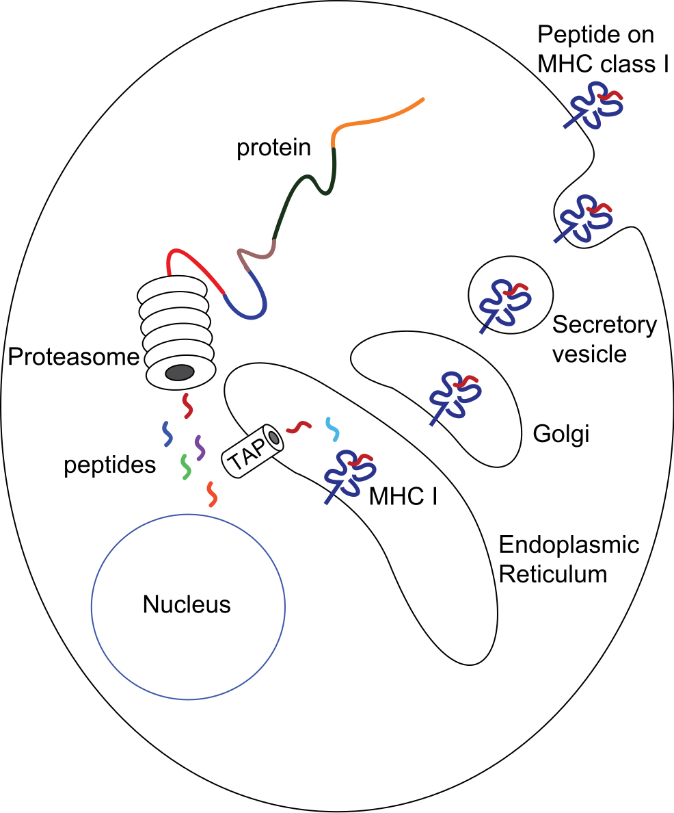
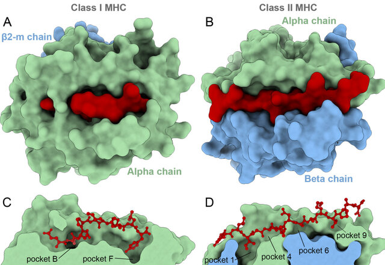
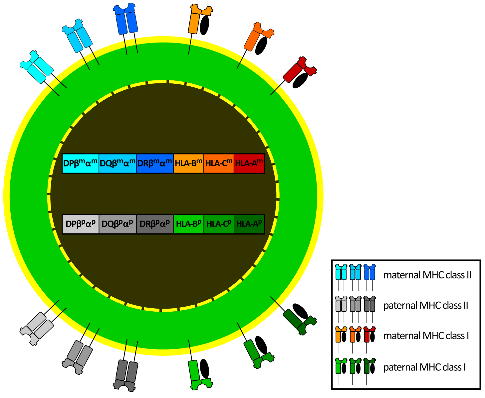

# Import data loading functions
from mhcpred.data import get_train_data, get_test_data
# Load training and test data
df_train = get_train_data()
df_test = get_test_data()Major Histocompatibility Complex (MHC)
The Major Histocompatibility Complex (MHC) is a crucial part of the immune system. It plays a key role in distinguishing between the body’s own cells and foreign invaders. The MHC is a region of DNA containing genes that code for cell surface proteins, known as MHC molecules. These molecules bind to fragments of proteins (antigens) and present them on the cell surface, allowing immune cells called T-cells to recognize and respond to potential threats. This interaction triggers an immune response when necessary.
MHC molecules are involved in:
- Distinguishing self from non-self: Preventing autoimmune attacks.
- Activating the immune response: Targeting infected cells.
- Organ transplantation: Determining donor compatibility.
- Susceptibility to autoimmune diseases: Some MHC variations are linked to increased risk.
Key Takeaway
MHC molecules are like cellular “display cases” that present antigens to T cells, triggering an immune response when necessary.
MHC Class I and Class II
MHC molecules are divided into two main classes: MHC class I and MHC class II.
MHC Class I
MHC class I molecules are present on most cells (except red blood cells). They present antigens from inside the cell. When a cell is infected or becomes cancerous, proteins within the cell are broken down into smaller fragments called epitopes. These epitopes are loaded onto MHC class I molecules and displayed on the cell surface. Killer T cells (cytotoxic T lymphocytes or CTLs) recognize these epitopes and can destroy infected or cancerous cells.

In humans, the main MHC class I molecules are HLA-A, HLA-B, and HLA-C (HLA stands for Human Leukocyte Antigen).
MHC Class II
MHC class II molecules are primarily found on specialized immune cells called antigen-presenting cells (APCs) like macrophages, dendritic cells, and B cells. They present antigens from outside the cell. APCs engulf foreign invaders and break them down into epitopes in a process called phagocytosis. These epitopes are loaded onto MHC class II molecules and displayed on the cell surface. Helper T cells recognize these epitopes and activate other immune cells to fight the infection. These Helper T cells have receptors that specifically bind to MHC Class II molecules. If a helper T cell recognizes a foreign epitope presented by MHC class II, it becomes activated and starts to coordinate the immune response. It releases chemical signals (cytokines) that help other immune cells, like B cells and killer T cells, to fight off the infection.


In humans, the main MHC class II molecules are HLA-DP, HLA-DQ, and HLA-DR.
Human Leukocyte Antigens (HLA)
In humans, MHC molecules are called Human Leukocyte Antigens (HLAs). The genes for HLA proteins are located within the MHC region on chromosome 6.
HLAs are important for:
- Organ transplantation: HLA matching is crucial to prevent organ rejection.
- Autoimmune diseases: Certain HLA types are associated with increased risk of autoimmune diseases.
- Drug responses: HLA variations can influence how individuals respond to certain medications.
- Evolutionary advantage: HLA diversity is important for population survival against various pathogens.

(Consider adding a simpler diagram to illustrate HLA inheritance.)
MHC Diversity
The MHC is highly diverse, with many different versions (alleles) of each MHC gene. This diversity is essential because different MHC molecules bind to different peptides. A diverse population is more likely to have individuals who can present antigens from new pathogens, ensuring better survival chances for the species.
Datasets
The IPD-IMGT/HLA Database is a specialized resource focusing on the sequences of the human major histocompatibility complex (MHC) or human leukocyte antigen (HLA) system. It provides comprehensive information about HLA alleles, including their sequences, nomenclature, and associated metadata. This database is crucial for researchers in immunology, transplantation, and vaccine development, as accurate HLA typing is essential for understanding immune responses and predicting transplant compatibility. The IEDB (Immune Epitope Database) is a widely used resource for curated experimental data on immune epitopes. It catalogs epitopes recognized by T cells and B cells in various diseases and conditions. The IEDB facilitates research in epitope discovery, vaccine design, and understanding immune recognition, offering tools and data for analyzing and predicting immune responses.
Predicting MHC Binding: A Machine Learning Approach
Relevance to Machine Learning
The interaction between an MHC molecule and a peptide is highly dependent on the amino acid sequence of the peptide and the specific type of MHC molecule. This sequence-structure-function relationship makes MHC-peptide binding prediction a suitable problem for machine learning. Experimental data on MHC-peptide binding affinities, though sometimes sparse, is available for training and evaluating predictive models. The high polymorphism of MHC genes, with numerous variants (alleles) existing in the population, adds complexity and motivates the development of specific prediction models.
Key MHC Concepts:
- MHC Class I and Class II: The two main classes of MHC molecules.
- Epitope: The specific part of the peptide recognized by the T cell receptor.
- Polymorphism: The existence of multiple versions (alleles) of MHC genes within a population. Different MHC alleles bind to different sets of peptides.
- Binding Affinity: The strength of the interaction between an MHC molecule and a peptide. Often measured experimentally, it serves as the target variable for many machine learning models.
Machine Learning Approaches
MHC-peptide binding prediction aims to develop models that accurately predict the binding affinity between a given peptide sequence and a specific MHC allele. This can be framed as a regression or classification task.
- Input: Peptide sequence, MHC allele (represented as a sequence or encoding).
- Output: Binding affinity (e.g., IC50 value, Kd value) or a binary label (binder/non-binder).
Feature engineering and model selection are crucial for building effective predictors. Common approaches include:
- Sequence-based Features: Amino acid composition, n-grams, physicochemical properties.
- Structure-based Features: (If available) Information about the 3D structure of the MHC-peptide complex.
- MHC Allele Encoding: Techniques such as one-hot encoding, amino acid embeddings, or other methods to represent the MHC allele sequence.
- Machine Learning Algorithms: Linear regression, Support Vector Machines (SVMs), Random Forests, Neural Networks (including Convolutional Neural Networks and Transformers).
Project Overview
Note
The code is available at https://github.com/nbrosse/mhcpred.
The goal of this project is to build a machine learning classifier that predicts whether a given peptide will be presented by a specific MHC class I protein, identified by its allele name. The data used for this project is derived from the training and evaluation data of NetMHCPan4.1 (Reynisson et al. 2020), a well-established framework for MHC binding prediction. The data is split into training and testing sets, with the training data further divided into five folds for cross-validation.
The dataset contains a binary target variable, “hit” (1 if the peptide is presented by the MHC, 0 otherwise), and two features:
“peptide”: The amino acid sequence of the peptide. These short chains of amino acids are potential antigens that could be presented to the immune system.
“allele”: The name of the MHC class I allele. MHC molecules are highly polymorphic, meaning there are many different versions (alleles) within the human population. Each allele has a slightly different binding groove, affecting which peptides it can bind and present. You can find details on the naming convention here (nomenclature).
Note
Predicting MHC antigen presentation is a complex field. This project provides a simplified introduction to the problem. For a more in-depth understanding, we recommend exploring NetMHCPan (Reynisson et al. 2020) and MHCflurry (O’Donnell, Rubinsteyn, and Laserson 2020) and the references cited within those publications. Note that the specific data used in this project is derived from NetMHCPan4.1 but must remain private.
We begin with Exploratory Data Analysis (EDA) to understand the characteristics of our data.
Exploratory Data Analysis
Using MHCflurry Pretrained Models for Prediction
We leverage the mhcflurry package to build our classifier. MHCflurry is a tool specifically designed for MHC binding affinity prediction. See also the associated paper (O’Donnell, Rubinsteyn, and Laserson 2020). MHCflurry is a software package focused on predicting how strongly peptides bind to MHC class I molecules. It’s based on machine learning models trained on a large dataset of experimentally measured peptide-MHC binding affinities. The current version uses neural networks trained with a mix of binding affinity and mass spectrometry data (ligand presentation).
We use the Binding Affinity pretrained model from mhcflurry to predict the binding affinity of peptides to MHC class I molecules using Class1AffinityPredictor. The following code assumes you have installed mhcflurry and downloaded the required pretrained models.
mhcflurry-downloads fetch models_class1_presentation
python scripts/mhcflurry_benchmark.pydef predict_with_mhcflurry() -> pd.DataFrame:
predictor = Class1AffinityPredictor.load()
df_test = get_test_data()
mhcflurry_predictions = predictor.predict_to_dataframe(
peptides=df_test.peptide.values,
alleles=df_test.allele.values,
allele=None,
)
df = pd.merge(df_test, mhcflurry_predictions, on=["allele", "peptide"], how="left")
df.to_csv(str(output_path / "mhcflurry_predictions.csv"), index=False)
return dfThe output is of the form:
| peptide | hit | allele | prediction | prediction_low | prediction_high | prediction_percentile |
|:--------------|:------|:------------|-------------:|-----------------:|------------------:|------------------------:|
| AAPATRAAL | True | HLA-B*35:03 | 94.297 | 59.902 | 144.624 | 0.205 |
| AAPSAAREL | True | HLA-B*35:03 | 116.19 | 79.847 | 169.241 | 0.262 |
| AEISQIHQSVTD | True | HLA-B*35:03 | 26103.26 | 22695.389 | 28415 | 15.739 |
| ALEEQLQQIRAE | True | HLA-B*35:03 | 24797.131 | 19988.967 | 28062.65 | 13.571 |
| AQDPLLLQM | True | HLA-B*35:03 | 2164.336 | 745.888 | 5390.727 | 1.413 |
| ASAPPGPPA | True | HLA-B*35:03 | 1398.729 | 387.675 | 3293.692 | 1.157 |
| DAHKGVAL | True | HLA-B*35:03 | 84.315 | 54.736 | 133.899 | 0.175 |
| DNPIQTVSL | True | HLA-B*35:03 | 1386.767 | 565.122 | 3667.21 | 1.151 |
| DPEAFLVQI | True | HLA-B*35:03 | 245.485 | 133.986 | 394.752 | 0.484 |The first 3 columns come from the test dataset.
- peptide: The amino acid sequence of the peptide being evaluated.
- hit: The ground truth, a boolean value indicating whether the peptide is known to be presented by the given MHC allele (
True) or not (False). - allele: The name of the MHC class I allele being considered.
The following columns are added by the binding affinity predictions:
- prediction: The raw prediction score from the MHCflurry model. Higher values generally indicate a stronger predicted binding affinity. These values are not directly interpretable in isolation.
- prediction_low/prediction_high: These represent the lower and upper bounds of a 95% confidence interval around the
predictionvalue. They provide an estimate of the uncertainty associated with the prediction. - prediction_percentile: This is the most useful column for interpreting the results. It represents the percentile rank of the
predictionscore compared to a background distribution of scores for random peptides. A lower percentile indicates a stronger predicted binding affinity. For example, a percentile of 1.0 means that the predicted score is in the top 1% of all possible scores.
The uncertainty estimation comes from the ensemble of neural networks used for the prediction. A percentile threshold (e.g., 2%) is commonly used to determine whether a peptide is likely to bind (lower is better).
Prediction: Fitting a Class1BinaryNeuralNetwork
We now fit a Class1BinaryNeuralNetwork on the training dataset. The code is available at https://github.com/nbrosse/mhcpred.
Here’s a glimpse of the training data structure:
| peptide | allele | hit |
|:-------------|:------------|:------|
| YFPLAPFNQL | HLA-C*14:02 | True |
| KESKINQVF | HLA-B*44:02 | True |
| QPHDPLVPLSA | HLA-B*54:01 | True |
| RTIADSLINSF | HLA-B*57:03 | True |Challenges arise in encoding the peptide and allele sequences for use in a neural network. Peptides have variable lengths, and alleles are represented by their names.
The MHCFlurry package provides a mapping between alleles and their corresponding MHC molecule sequences within the allele_sequences.csv file. This mapping is crucial for encoding the alleles.
| Allele | Sequence |
|:------------|:------------------------------------------|
| HLA-A*01:01 | YFAMYQENMAHTDANTLYGIIYDRDYTWVARVYRGYA |
| HLA-A*01:02 | YSAMYQENMAHTDANTLYGIIYDRDYTWVARVYRGYA |
| HLA-A*01:03 | YFAMYQENMAHTDANTLYGIMYDRDYTWVARVYRGYA |
| HLA-A*01:04 | YFAMYQENMAHTDANTLYGIIYDRDYTWVARVYRGYX |
| HLA-A*01:06 | YFAMYQENMAHTDANTLYGIIYDRDYTWVALAYRGYA |First, we import necessary libraries. We also import components from our own mhcpred library, which contains the neural network architecture and data loading functions.
import pickle
from pathlib import Path
from typing import Iterator
import numpy as np
import pandas as pd
from mhcflurry.allele_encoding import AlleleEncoding
from mhcflurry.encodable_sequences import EncodableSequences
from sklearn.model_selection import train_test_split
from mhcpred.class1_binary_nn import Class1BinaryNeuralNetwork
from mhcpred.config import settings
from mhcpred.data import get_test_data, get_train_data
from mhcpred.hyperparameters import base_hyperparametersWe load the allele sequences, training data, and test data using helper functions. The allele sequences are crucial for encoding the MHC alleles.
allele_sequences = pd.read_csv(
str(data_path / "allele_sequences.csv"), index_col=0
).iloc[:, 0]
df_total_train = get_train_data()
df_test = get_test_data()We determine the alleles present in our data and filter the loaded allele sequences to only include those we’ll be using.
alleles_in_use = set(df_total_train.allele).union(set(df_test.allele))
allele_sequences_in_use = allele_sequences[allele_sequences.index.isin(alleles_in_use)]The AlleleEncoding class is designed to cache encodings for a sequence of alleles. It maps allele names to integer indices and sequences, allowing consistent use of these mappings, especially as inputs to neural networks. The EncodableSequences class is used to encode variable-length peptides into fixed-size numerical matrices. It caches various encodings of a list of sequences and provides methods to encode these sequences into fixed-length categorical or vector representations.
We also split the training data into training and validation sets using train_test_split from sklearn. Stratified splitting ensures the class balance is maintained across the training and validation sets. The validation data is also preprocessed by encoding the peptides and alleles.
allele_encoding = AlleleEncoding(
alleles=allele_sequences_in_use.index.values,
allele_to_sequence=allele_sequences_in_use.to_dict(),
)
df_train, df_val = train_test_split(
df_total_train, test_size=0.1, shuffle=True, stratify=df_total_train.hit.values
)
val_peptides = EncodableSequences(df_val.peptide.values)
val_alleles = AlleleEncoding(
alleles=df_val.allele.values,
allele_to_sequence=allele_sequences_in_use.to_dict(),
)AlleleEncoding provides a robust and efficient way to manage and encode allele sequences. It handles the complexities of mapping allele names to indices, storing and padding sequences, and providing different encoding options. The AlleleEncoding class manages allele sequences efficiently:
- Allele Universe vs. Used Alleles: The class distinguishes between two sets of alleles:
- Allele Universe: The complete set of alleles the system knows about. This is defined by the
allele_to_sequencedictionary, mapping allele names to their amino acid sequences. - Used Alleles: The specific set of alleles used in a particular analysis or task. This is provided as a list when creating an
AlleleEncodinginstance.
allele_to_indexMapping: A dictionary (self.allele_to_index) is created to map each allele in the universe to a unique integer index. This includes a special index forNonevalues, often used as padding. This mapping ensures consistency: the same allele always gets the same index.Sequence Storage (
self.sequences): The amino acid sequences for all alleles in the universe are stored in a Pandas Series (self.sequences). Critically, these sequences are padded to the same length using “X” characters. This padding is essential for creating fixed-length numerical representations, which many machine learning models require.Borrowing (
borrow_from): Theborrow_fromparameter allows you to create a newAlleleEncodinginstance that inherits the allele universe and mappings from an existing instance. This is a powerful way to ensure consistency across different parts of your code. You don’t have to redefine theallele_to_sequencemapping every time.Encoding: The class provides methods to encode the allele sequences into numerical matrices, suitable for machine learning.
allele_representations(encoding_name): Encodes the entire allele universe. This is useful for pre-calculating encodings for all known alleles.fixed_length_vector_encoded_sequences(encoding_name): Encodes the used alleles (the subset provided when the object was initialized). This uses the pre-calculated encodings fromallele_representationsand selects only the encodings for the alleles inself.alleles, in the correct order. This gives you a matrix where each row represents an allele sequence.
- Encoding Methods (
encoding_name): The type of encoding can be specified using theencoding_nameparameter. Common options include “BLOSUM62” (a substitution matrix) and “one-hot” encoding.
BLOSUM62 (Blocks Substitution Matrix) is a widely used substitution matrix in bioinformatics. It represents the likelihood of one amino acid being substituted for another during evolution. The matrix assigns a score to each pair of amino acids, reflecting their similarity. Higher scores indicate a higher probability of substitution (or that the two amino acids are more similar). Negative scores indicate substitutions that are less likely or even unfavorable.
The AlleleEncoding class uses BLOSUM62 to convert amino acid sequences into numerical representations. Each amino acid in the sequence is replaced by a vector of 21 numbers (20 amino acids + the “X” character). Each of these 21 numbers is the BLOSUM62 score between the amino acid in the sequence and the amino acid represented by the position in the 21-element vector.
Amino Acid Indexing: First, each amino acid is converted to an index. There’s a mapping from amino acid letter to index.
BLOSUM62 Lookup: For each amino acid in the sequence, the code looks up its corresponding row in the BLOSUM62 matrix. This row represents the similarity scores between that amino acid and all other amino acids (and ‘X’).
Vector Representation: The row from the BLOSUM62 matrix becomes the vector representation of that amino acid. So, “M” would be represented by a vector of 21 numbers (the scores of M with every other amino acid and X), and “A” would also be represented by its own 21-number vector.
Sequence Encoding: The encoded sequence becomes a matrix. If the original sequence was of length n, the encoded sequence is now an n x 21 matrix.
The train_data_iterator function is a generator that yields batches of training data. This function also handles filtering of alleles that might be present in the training data but not in the allele_sequences data to handle potential data inconsistencies.
def train_data_iterator(
df_train: pd.DataFrame,
train_allele_encoding: AlleleEncoding,
batch_size: int = 1024,
) -> Iterator[tuple[AlleleEncoding, EncodableSequences, np.ndarray]]:
"""
This function creates a data generator for training the neural network.
It iterates over the training data in batches and yields tuples of
(allele_encoding, peptide_sequences, labels). It also handles filtering
of alleles not found in the initial allele encoding.
"""
# Get unique alleles in the training set.
alleles = df_train.allele.unique()
# Filter alleles to keep only those for which sequences are available.
usable_alleles = [
c for c in alleles if c in train_allele_encoding.allele_to_sequence
]
print("Using %d / %d alleles" % (len(usable_alleles), len(alleles)))
print(
"Skipped alleles: ",
[c for c in alleles if c not in train_allele_encoding.allele_to_sequence],
)
df_train = df_train.query("allele in @usable_alleles")
# Calculate the number of batches.
n_splits = np.ceil(len(df_train) / batch_size)
# Infinite loop to allow for multiple epochs.
while True:
# Split the training data into batches.
epoch_dfs = np.array_split(df_train.copy(), n_splits)
for k, df in enumerate(epoch_dfs):
if len(df) == 0:
continue
# Encode peptides and alleles for the current batch.
encodable_peptides = EncodableSequences(df.peptide.values)
allele_encoding = AlleleEncoding(
alleles=df.allele.values,
borrow_from=train_allele_encoding, # Reuse encoding from main allele_encoding
)
# Yield the encoded data and labels (hit column).
yield (allele_encoding, encodable_peptides, df.hit.values)The neural network model is initialized using the Class1BinaryNeuralNetwork class. Base hyperparameters are used for initialization. The model is then trained using the fit_generator method. This method takes the training data generator, validation data, and other parameters like the number of epochs and steps per epoch. The steps_per_epoch is calculated based on the training data size and batch size.
model = Class1BinaryNeuralNetwork(**base_hyperparameters)
steps_per_epoch = np.ceil(len(df_train) / batch_size)
batch_size = 1024 # Define batch_size here
train_generator = train_data_iterator(df_train, allele_encoding, batch_size) #create the generator
model.fit_generator(
generator=train_generator,
validation_peptide_encoding=val_peptides,
validation_affinities=df_val.hit.values,
validation_allele_encoding=val_alleles,
validation_inequalities=None,
validation_output_indices=None,
steps_per_epoch=steps_per_epoch,
epochs=2,
)The Class1BinaryNeuralNetwork neural network takes two inputs:
- Allele: A single input representing the MHC allele.
- Peptide: A sequence of 45 amino acids represented as a 21-dimensional vector for each amino acid (likely using BLOSUM62 encoding or a similar technique).
The network then processes these inputs through several layers:
Embedding Layer: The allele input is passed through an embedding layer. This layer learns a 777-dimensional vector representation for each allele, capturing its key characteristics relevant to peptide binding.
Flatten Layers: These layers reshape the input data. The peptide input, which is initially a 45x21 matrix, is flattened into a 945-element vector. Similarly, the 1x777 allele embedding is flattened into a 777-element vector. This prepares the data for the subsequent dense layers.
Concatenate Layer: The flattened representations of the peptide and allele are combined into a single 1722-element vector. This crucial step merges the information from both inputs, allowing the network to learn the combined effect of allele and peptide on binding affinity.
Dense Layers: These are fully connected layers. The first dense layer transforms the 1722-element vector into a 1024-element vector, and the second further reduces it to 512 elements. These layers learn complex non-linear relationships between the combined allele and peptide representation, extracting features crucial for predicting binding affinity.
Dropout Layers: Dropout is a regularization technique. During training, these layers randomly “drop out” (ignore) a fraction of neurons. This prevents the network from overfitting to the training data and improves its ability to generalize to unseen data.
Output Layer: The final dense layer has a single output neuron. This neuron outputs a single value, representing the predicted binding affinity between the given peptide and MHC allele. Since we’re predicting a binary “hit” variable, a sigmoid activation function is used in this layer to output a probability between 0 and 1.
This architecture is designed to effectively learn the complex patterns governing MHC-peptide binding.
Finally, the trained model is used to make predictions on the test data. The test data is preprocessed in the same way as the training data, and the predict method of the model is used to generate predictions. These predictions are then added to the test dataframe and saved to a CSV file.
test_peptides = df_test.peptide.values
test_allele_encoding = AlleleEncoding(
alleles=df_test.allele.values,
allele_to_sequence=allele_sequences_in_use.to_dict(),
)
predictions = model.predict(
peptides=test_peptides,
allele_encoding=test_allele_encoding,
)
df_test["predictions"] = predictions
df_test.to_csv(str(output_path / "mhcpred_predictions.csv"), index=False)Metrics
We evaluate the predictions of the two methods (mhcflurry and mhcpred) using standard binary classification metrics.
Conclusion
Major Histocompatibility Complex (MHC) molecules play a crucial role in the adaptive immune system by:
- Presenting peptide fragments on cell surfaces
- Enabling T-cells to detect foreign or abnormal proteins
- Mediating immune responses against pathogens and cancer cells
In this analysis, we compared two approaches for MHC-I binding prediction:
- MHCflurry: An established prediction method using neural networks
- MHCpred: Our custom trained implementation using peptide and allele encodings
Both methods demonstrate capability in predicting peptide-MHC binding affinities. This project provides a simplified introduction to MHC binding prediction using machine learning. The field is complex and rapidly evolving, with many specialized tools and techniques available for more advanced analyses.
References
Antunes, Dinler A., Jayvee R. Abella, Didier Devaurs, Maurício M. Rigo, and Lydia E. Kavraki. 2018. “Structure-based Methods for Binding Mode and Binding Affinity Prediction for Peptide-MHC Complexes.” Current Topics in Medicinal Chemistry 18 (26): 2239–55. https://doi.org/10.2174/1568026619666181224101744.
O’Donnell, Timothy J, Alex Rubinsteyn, and Uri Laserson. 2020. “MHCflurry 2.0: Improved Pan-Allele Prediction of MHC Class i-Presented Peptides by Incorporating Antigen Processing.” Cell Systems 11 (1): 42–48.
Reynisson, Birkir, Bruno Alvarez, Sinu Paul, Bjoern Peters, and Morten Nielsen. 2020. “NetMHCpan-4.1 and NetMHCIIpan-4.0: improved predictions of MHC antigen presentation by concurrent motif deconvolution and integration of MS MHC eluted ligand data.” Nucleic Acids Research 48 (W1): W449–54. https://doi.org/10.1093/nar/gkaa379.